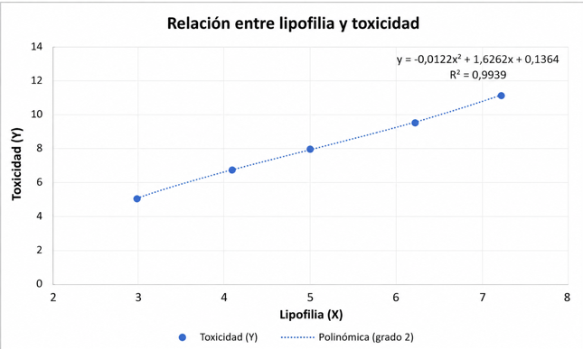

Aplicación de sistemas sobredimensionados y ajuste por mínimos cuadrados para apoyar el cribado computacional de fármacos.
Explorar proyectoMuchos compuestos prometedores son descartados debido a efectos adversos detectados durante las fases de desarrollo farmacológico.
Los ensayos experimentales requieren una elevada inversión de tiempo, recursos humanos y financiación.
Los modelos predictivos permiten identificar riesgos potenciales antes de iniciar estudios más complejos y costosos.
El problema puede representarse mediante un sistema sobredimensionado, donde existen más observaciones disponibles que parámetros desconocidos.
Contiene las propiedades moleculares observadas para cada compuesto.
Representa los parámetros desconocidos que deben estimarse.
Contiene los niveles de toxicidad observados.
Se utilizaron propiedades moleculares y niveles de toxicidad simulados.
Los datos se organizaron en forma matricial para generar un sistema sobredimensionado.
Se aplicó el método de mínimos cuadrados para estimar los parámetros del modelo.
Los resultados se representaron gráficamente y se analizó la calidad del ajuste obtenido.
Compuestos analizados
Variables estudiadas
Coeficiente R²
Método utilizado
El ajuste polinómico realizado presenta un coeficiente de determinación R² = 0,9939. Esto indica que aproximadamente el 99,39 % de la variabilidad observada puede explicarse mediante el modelo ajustado.

Figura 1. Relación entre la lipofilia y la toxicidad mediante una regresión polinómica de segundo grado.
El conjunto de datos utilizado tiene fines académicos.
Un exceso de complejidad puede reducir la capacidad predictiva.
Los resultados deben contrastarse mediante estudios reales.
Bishop, C. M. (2006). Pattern Recognition and Machine Learning.
Hastie, T., Tibshirani, R., & Friedman, J. (2009). The Elements of Statistical Learning.
Zhavoronkov, A., Vanhaelen, Q., & Oprea, T. I. (2020). Clinical Pharmacology & Therapeutics.